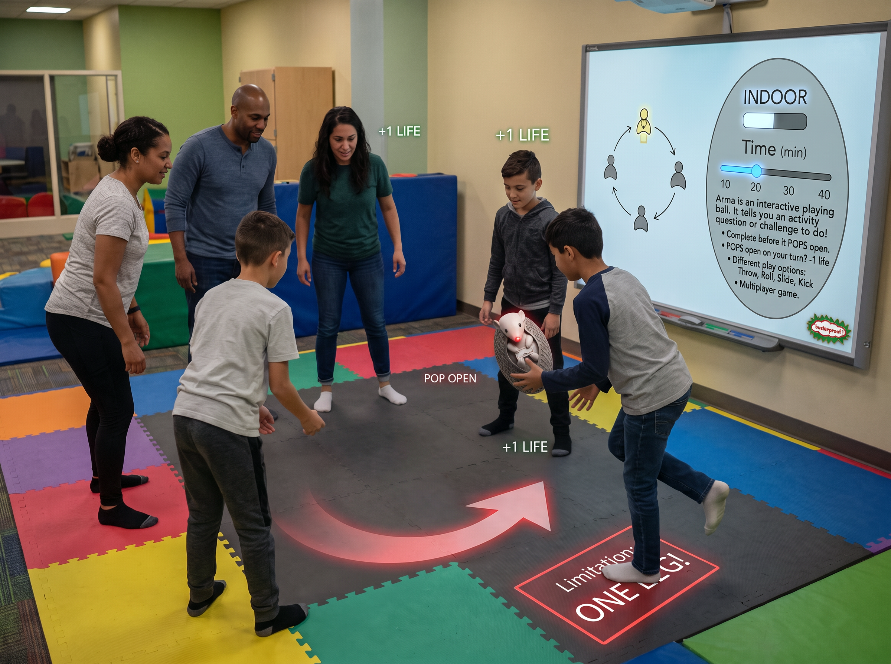
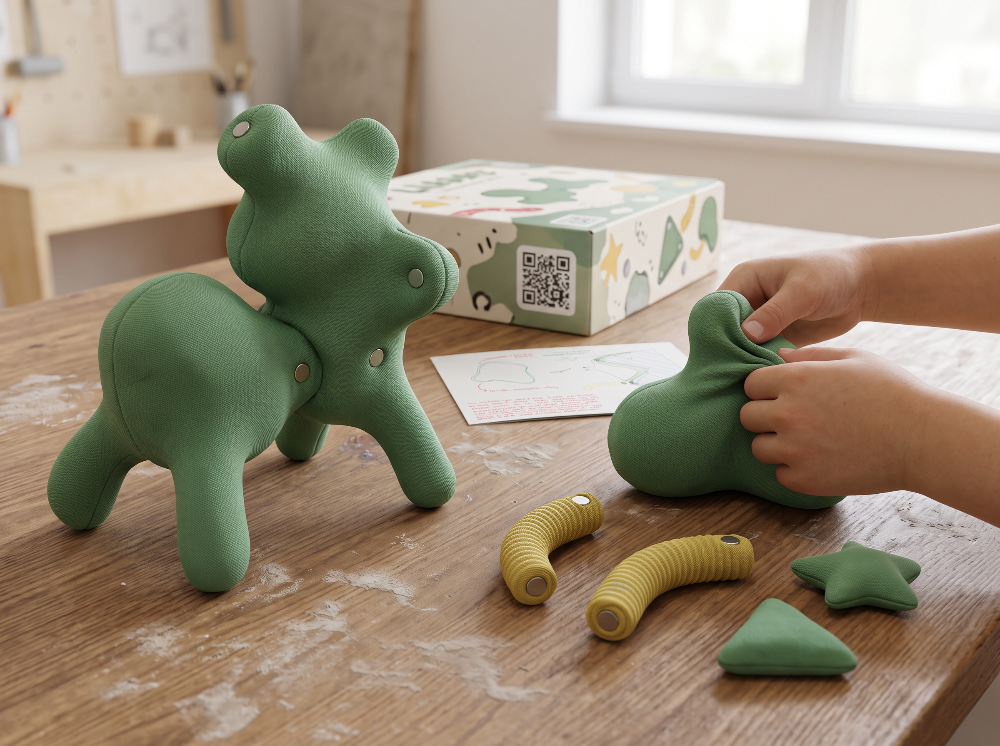

Year 2 · Child & Play Perspectives
ARMA:
play together.
A co-designed interactive play ball that turns different abilities, ideas and movement into a shared game.
Designed with
children, not for them.
Our team began with co-design sessions with children, investigating how they experience and navigate communication barriers while playing together. Through conversation, movement and making, we focused on what helps every child take an active role.
Those sessions informed ARMA: an armadillo-inspired play ball that proposes activities and challenges while inviting a group to adapt how they play together.
Why ARMA
was the direction.
Our co-design work pointed to a play experience that balances freedom and support: children need different ways to participate, but also a shared reason to collaborate. ARMA gave this balance a tangible form. It combines an open-ended ball game with questions, challenges and adaptable play modes, so the group can create its own way of playing while still having a clear shared activity.
The armadillo character was chosen deliberately. Its rounded form is friendly and neutral across ages and backgrounds, while its protective armour suggests a safe space to try, fail and contribute. Changing activities and difficulty levels let children adapt the experience to their own skills, rather than excluding anyone from the game.
An alternative:
Blobs.
Blobs was an alternative design route that explored a softer, more tactile form of open-ended play. We investigated a personalisable creature built from a mouldable core, a soft magnetic skin and interchangeable limbs or shapes.
Children could shape the Blobs, attach features and use card prompts for games, limitations and inspiration. This direction explored how physical customisation and a light set of prompts could help children invent their own games, rather than only follow one prescribed activity.
